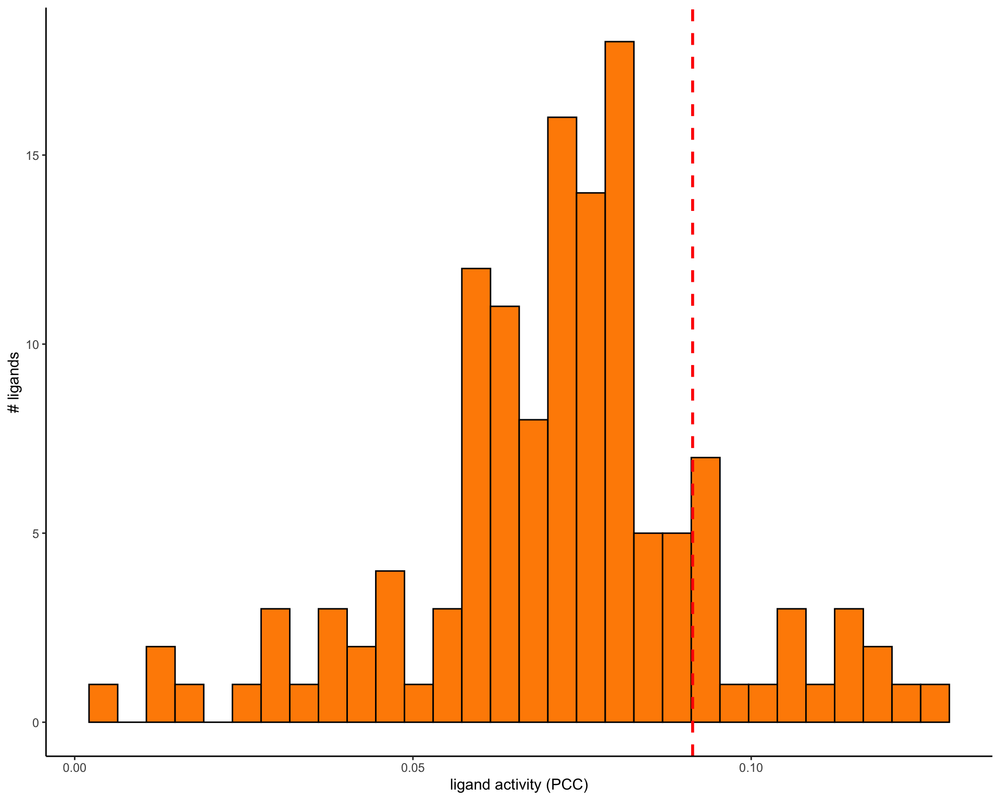
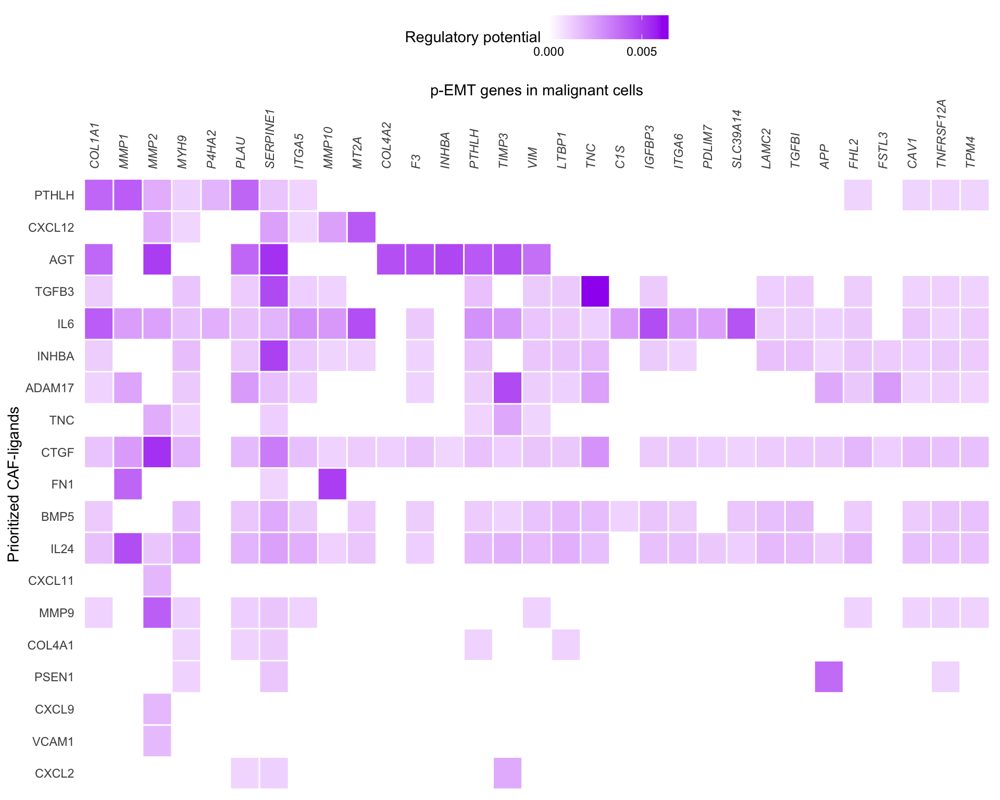
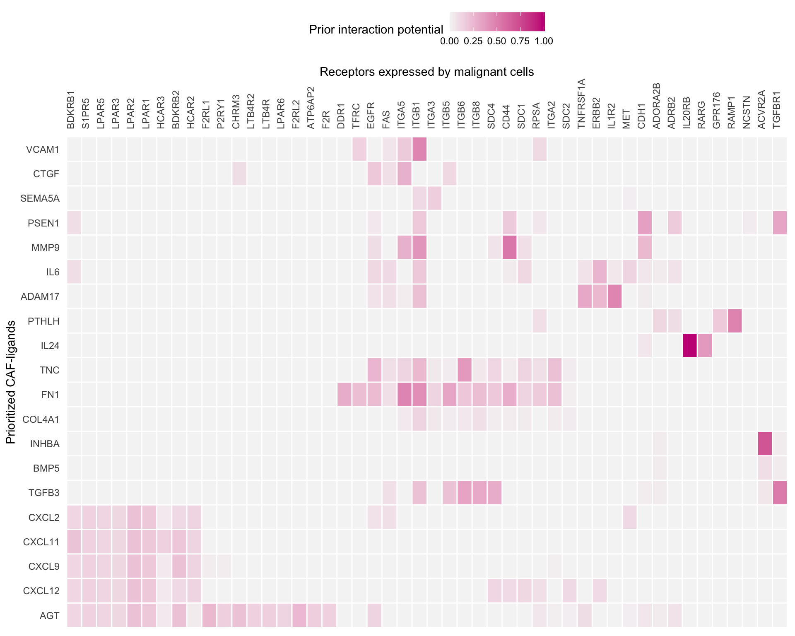
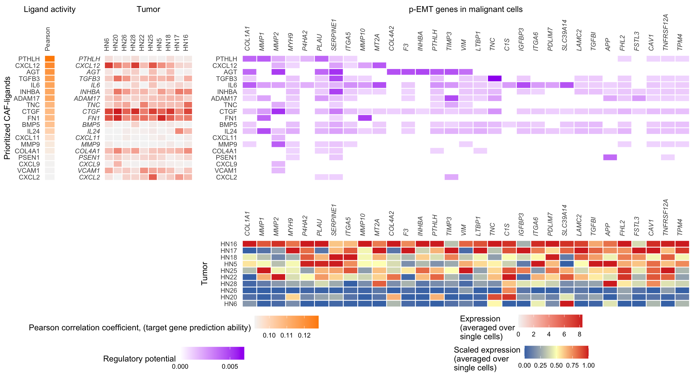
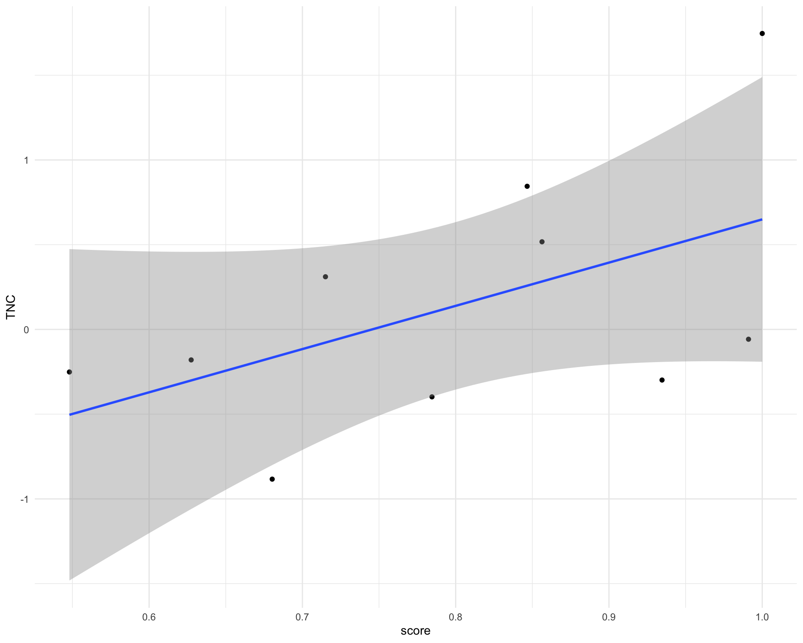

Last updated: 2020-11-24
Checks: 7 0
Knit directory: interaction-tools/
This reproducible R Markdown analysis was created with workflowr (version 1.6.2). The Checks tab describes the reproducibility checks that were applied when the results were created. The Past versions tab lists the development history.
Great! Since the R Markdown file has been committed to the Git repository, you know the exact version of the code that produced these results.
Great job! The global environment was empty. Objects defined in the global environment can affect the analysis in your R Markdown file in unknown ways. For reproduciblity it’s best to always run the code in an empty environment.
The command set.seed(20191213) was run prior to running the code in the R Markdown file. Setting a seed ensures that any results that rely on randomness, e.g. subsampling or permutations, are reproducible.
Great job! Recording the operating system, R version, and package versions is critical for reproducibility.
Nice! There were no cached chunks for this analysis, so you can be confident that you successfully produced the results during this run.
Great job! Using relative paths to the files within your workflowr project makes it easier to run your code on other machines.
Great! You are using Git for version control. Tracking code development and connecting the code version to the results is critical for reproducibility.
The results in this page were generated with repository version 0333fe3. See the Past versions tab to see a history of the changes made to the R Markdown and HTML files.
Note that you need to be careful to ensure that all relevant files for the analysis have been committed to Git prior to generating the results (you can use wflow_publish or wflow_git_commit). workflowr only checks the R Markdown file, but you know if there are other scripts or data files that it depends on. Below is the status of the Git repository when the results were generated:
Ignored files:
Ignored: .Rhistory
Ignored: .Rproj.user/
Ignored: .drake/
Ignored: data/COMUNET/
Ignored: data/CellChat/
Ignored: data/ICELLNET/
Ignored: data/NicheNet/
Ignored: data/cellphonedb/
Ignored: data/celltalker/
Ignored: output/14-CellChat.Rmd/
Ignored: output/15-talklr.Rmd/
Ignored: output/16-CiteFuse.Rmd/
Ignored: output/17-scTHI.Rmd/
Ignored: output/18-celltalker.Rmd/
Ignored: output/index.Rmd/
Ignored: renv/library/
Ignored: renv/python/
Ignored: renv/staging/
Unstaged changes:
Modified: _drake.R
Note that any generated files, e.g. HTML, png, CSS, etc., are not included in this status report because it is ok for generated content to have uncommitted changes.
These are the previous versions of the repository in which changes were made to the R Markdown (analysis/12-NicheNet.Rmd) and HTML (docs/12-NicheNet.html) files. If you’ve configured a remote Git repository (see ?wflow_git_remote), click on the hyperlinks in the table below to view the files as they were in that past version.
| File | Version | Author | Date | Message |
|---|---|---|---|---|
| html | 3feea4c | Luke Zappia | 2020-05-27 | Add chunk timing to documents |
| html | d3bd2d6 | Luke Zappia | 2020-05-27 | Add NicheNet to drake |
| Rmd | 749bd02 | Luke Zappia | 2020-05-26 | Added remaining NicheNet examples |
| Rmd | 7fbd88f | Luke Zappia | 2020-05-26 | Add signalling pathway to NicheNet |
| Rmd | 701ded4 | Luke Zappia | 2020-05-19 | Add rest of main NicheNet tutorial |
| Rmd | 0cf961b | Luke Zappia | 2020-05-18 | Add most of first NicheNet tutorial |
| Rmd | 58b3143 | Luke Zappia | 2020-05-08 | Set up NicheNet example file |
# Setup document
source(here::here("code", "setup.R"))
# Function dependencies
invisible(drake::readd(download_link))In this document we are going to run through the example analysis for the NicheNet tool and have a look at the output it produces. More information about NicheNet can be found at https://github.com/saeyslab/nichenetr.
library("nichenetr")
library("RColorBrewer")
library("cowplot")
library("ggpubr")
library("circlize")
conflict_prefer("get_legend", "cowplot")Chunk time: 2.15 secs
NicheNet takes several inputs for different parts of the analysis. These include a matrix of ligand targets, a ligand-receptor network, network weights, an scRNA-seq dataset and a gene set of interest.
This matrix contains the prior potential that a particular ligand might regulate the expression of a specific target gene. Here is a snippet of the matrix:
# From https://zenodo.org/record/3260758/files/ligand_target_matrix.rds
ligand_targets <- read_rds(
fs::path(PATHS$NicheNet_in, "ligand_target_matrix.Rds")
)
pander(ligand_targets[1:5, 1:5])| CXCL1 | CXCL2 | CXCL3 | CXCL5 | PPBP | |
|---|---|---|---|---|---|
| A1BG | 0.0003534 | 0.0004041 | 0.000373 | 0.0003081 | 0.0002628 |
| A1BG-AS1 | 0.0001651 | 0.0001509 | 0.0001584 | 0.0001317 | 0.0001232 |
| A1CF | 0.0005787 | 0.0004596 | 0.0003896 | 0.0003293 | 0.0003212 |
| A2M | 0.0006027 | 0.0005997 | 0.0005164 | 0.0004517 | 0.0004591 |
| A2M-AS1 | 8.899e-05 | 8.243e-05 | 7.484e-05 | 4.913e-05 | 5.12e-05 |
Chunk time: 1.22 secs
The full matrix has 25345 rows (targets) and 688 columns (ligands).
This is a database of ligand-receptor pairs with information about their source.
# From https://zenodo.org/record/3260758/files/lr_network.rds
lr_network <- read_rds(fs::path(PATHS$NicheNet_in, "lr_network.Rds"))
skim(lr_network)| Name | lr_network |
| Number of rows | 12651 |
| Number of columns | 4 |
| _______________________ | |
| Column type frequency: | |
| character | 4 |
| ________________________ | |
| Group variables | None |
Variable type: character
| skim_variable | n_missing | complete_rate | min | max | empty | n_unique | whitespace |
|---|---|---|---|---|---|---|---|
| from | 0 | 1 | 2 | 9 | 0 | 688 | 0 |
| to | 0 | 1 | 2 | 9 | 0 | 857 | 0 |
| source | 0 | 1 | 6 | 18 | 0 | 14 | 0 |
| database | 0 | 1 | 4 | 18 | 0 | 5 | 0 |
Chunk time: 0.13 secs
This is a database of gene-receptor pairs with information about their source.
# From https://zenodo.org/record/3260758/files/gr_network.rds
gr_network <- read_rds(fs::path(PATHS$NicheNet_in, "gr_network.Rds"))
skim(gr_network)| Name | gr_network |
| Number of rows | 3592299 |
| Number of columns | 4 |
| _______________________ | |
| Column type frequency: | |
| character | 4 |
| ________________________ | |
| Group variables | None |
Variable type: character
| skim_variable | n_missing | complete_rate | min | max | empty | n_unique | whitespace |
|---|---|---|---|---|---|---|---|
| from | 0 | 1 | 1 | 11 | 0 | 4486 | 0 |
| to | 0 | 1 | 1 | 22 | 0 | 25103 | 0 |
| source | 0 | 1 | 6 | 40 | 0 | 20 | 0 |
| database | 0 | 1 | 5 | 25 | 0 | 8 | 0 |
Chunk time: 12.47 secs
This is a database of signalling interactions with information about their source.
# From https://zenodo.org/record/3260758/files/signaling_network.rds
sig_network <- read_rds(fs::path(PATHS$NicheNet_in, "signaling_network.Rds"))
skim(sig_network)| Name | sig_network |
| Number of rows | 3621987 |
| Number of columns | 4 |
| _______________________ | |
| Column type frequency: | |
| character | 4 |
| ________________________ | |
| Group variables | None |
Variable type: character
| skim_variable | n_missing | complete_rate | min | max | empty | n_unique | whitespace |
|---|---|---|---|---|---|---|---|
| from | 0 | 1 | 1 | 15 | 0 | 18550 | 0 |
| to | 0 | 1 | 1 | 15 | 0 | 18068 | 0 |
| source | 0 | 1 | 12 | 42 | 0 | 23 | 0 |
| database | 0 | 1 | 4 | 24 | 0 | 7 | 0 |
Chunk time: 13.08 secs
# From https://zenodo.org/record/3260758/files/weighted_networks.rds
weighted_networks <- read_rds(
fs::path(PATHS$NicheNet_in, "weighted_networks.Rds")
)Chunk time: 3.41 secs
This is a list with 2 items: lr_sig and gr.
skim(weighted_networks$lr_sig)| Name | weighted_networks$lr_sig |
| Number of rows | 2476577 |
| Number of columns | 3 |
| _______________________ | |
| Column type frequency: | |
| character | 2 |
| numeric | 1 |
| ________________________ | |
| Group variables | None |
Variable type: character
| skim_variable | n_missing | complete_rate | min | max | empty | n_unique | whitespace |
|---|---|---|---|---|---|---|---|
| from | 0 | 1 | 1 | 15 | 0 | 18553 | 0 |
| to | 0 | 1 | 1 | 15 | 0 | 18077 | 0 |
Variable type: numeric
| skim_variable | n_missing | complete_rate | mean | sd | p0 | p25 | p50 | p75 | p100 | hist |
|---|---|---|---|---|---|---|---|---|---|---|
| weight | 0 | 1 | 0.12 | 0.1 | 0 | 0.06 | 0.09 | 0.13 | 3.89 | ▇▁▁▁▁ |
Chunk time: 3.39 secs
skim(weighted_networks$gr)| Name | weighted_networks$gr |
| Number of rows | 2912482 |
| Number of columns | 3 |
| _______________________ | |
| Column type frequency: | |
| character | 2 |
| numeric | 1 |
| ________________________ | |
| Group variables | None |
Variable type: character
| skim_variable | n_missing | complete_rate | min | max | empty | n_unique | whitespace |
|---|---|---|---|---|---|---|---|
| from | 0 | 1 | 1 | 11 | 0 | 4486 | 0 |
| to | 0 | 1 | 1 | 22 | 0 | 25103 | 0 |
Variable type: numeric
| skim_variable | n_missing | complete_rate | mean | sd | p0 | p25 | p50 | p75 | p100 | hist |
|---|---|---|---|---|---|---|---|---|---|---|
| weight | 0 | 1 | 0.03 | 0.03 | 0 | 0.01 | 0.02 | 0.05 | 1.28 | ▇▁▁▁▁ |
Chunk time: 3.84 secs
The example dataset is from cancer-associated fibroblasts (CAFs) in the head and neck squamous cell carcinoma (HNSCC) tumour microenvironment.
# From https://zenodo.org/record/3260758/files/hnscc_expression.rds
hnscc <- read_rds(fs::path(PATHS$NicheNet_in, "hnscc_expression.Rds"))Chunk time: 5.84 secs
This dataset is provided as a list with 3 items: expression, sample_info** and expressed_genes.
The first item is the expression matrix.
exprs_mat <- hnscc$expression
pander(exprs_mat[1:5, 1:5])| C9orf152 | RPS11 | ELMO2 | CREB3L1 | PNMA1 | |
|---|---|---|---|---|---|
| HN28_P15_D06_S330_comb | 0 | 6.004 | 0 | 0 | 5.147 |
| HN28_P6_G05_S173_comb | 0 | 7.301 | 0 | 0 | 5.333 |
| HN26_P14_D11_S239_comb | 0.4276 | 7.288 | 0 | 0 | 2.834 |
| HN26_P14_H05_S281_comb | 0 | 0 | 5.247 | 0 | 5.751 |
| HN26_P25_H09_S189_comb | 0 | 7.474 | 0.5049 | 0 | 0.1966 |
Chunk time: 0.01 secs
The expression matrix has 5902 rows (cells) and 23686 columns (genes).
There is also some metadata about the cells.
sample_info <- hnscc$sample_info
skim(sample_info)| Name | sample_info |
| Number of rows | 5902 |
| Number of columns | 7 |
| _______________________ | |
| Column type frequency: | |
| character | 7 |
| ________________________ | |
| Group variables | None |
Variable type: character
| skim_variable | n_missing | complete_rate | min | max | empty | n_unique | whitespace |
|---|---|---|---|---|---|---|---|
| processed by Maxima enzyme | 0 | 1 | 1 | 1 | 0 | 2 | 0 |
| Lymph node | 0 | 1 | 1 | 1 | 0 | 2 | 0 |
| classified as cancer cell | 0 | 1 | 1 | 1 | 0 | 2 | 0 |
| classified as non-cancer cells | 0 | 1 | 1 | 1 | 0 | 2 | 0 |
| non-cancer cell type | 0 | 1 | 1 | 13 | 0 | 12 | 0 |
| cell | 0 | 1 | 16 | 33 | 0 | 5902 | 0 |
| tumor | 0 | 1 | 2 | 4 | 0 | 18 | 0 |
Chunk time: 0.07 secs
The final item is a vector of the names of expressed genes.
skim(hnscc$expressed_genes)| Name | hnscc$expressed_genes |
| Number of rows | 7374 |
| Number of columns | 1 |
| _______________________ | |
| Column type frequency: | |
| character | 1 |
| ________________________ | |
| Group variables | None |
Variable type: character
| skim_variable | n_missing | complete_rate | min | max | empty | n_unique | whitespace |
|---|---|---|---|---|---|---|---|
| data | 0 | 1 | 2 | 13 | 0 | 7374 | 0 |
Chunk time: 0.03 secs
Because we are looking at how CAFs influence cancer growth we will use a signature for p-EMT.
# From https://zenodo.org/record/3260758/files/pemt_signature.txt
geneset <- read_tsv(
fs::path(PATHS$NicheNet_in, "pemt_signature.txt"),
col_types = cols(
gene = col_character()
),
col_names = "gene"
) %>%
pull(gene) %>%
.[. %in% rownames(ligand_targets)]
skim(geneset)| Name | geneset |
| Number of rows | 96 |
| Number of columns | 1 |
| _______________________ | |
| Column type frequency: | |
| character | 1 |
| ________________________ | |
| Group variables | None |
Variable type: character
| skim_variable | n_missing | complete_rate | min | max | empty | n_unique | whitespace |
|---|---|---|---|---|---|---|---|
| data | 0 | 1 | 2 | 9 | 0 | 96 | 0 |
Chunk time: 0.07 secs
The first step in the analysis is to define which genes are expressed in the sender and receiver cell populations. In this example the CAFs are defined to be the senders and tumour cells (from high quality tumours) are defined to be receivers.
We also need to set a threshold for deciding a gene is “expressed”. Here we use the following formula:
\[Ea_i = log_2((\frac{1}{k}\sum_{i = 1}^{k} TPM_i) + 1) >= 4\]
NOTE: For UMI data (10x Chromium) the authors don’t use this formula and instead suggest a threshold of non-zero expression in at least 10% of cells.
# Low-quality tumours to remove
tumours_remove <- c("HN10", "HN", "HN12", "HN13", "HN24", "HN7", "HN8", "HN23")
CAF_ids <- sample_info %>%
filter(
`Lymph node` == 0 &
!(tumor %in% tumours_remove) &
`non-cancer cell type` == "CAF"
) %>%
pull(cell)
malignant_ids <- sample_info %>%
filter(
`Lymph node` == 0 &
!(tumor %in% tumours_remove) &
`classified as cancer cell` == 1
) %>%
pull(cell)
expressed_sender <- exprs_mat[CAF_ids, ] %>%
apply(2, function(x) {10 * (2 ** x - 1)}) %>%
apply(2, function(x) {log2(mean(x) + 1)}) %>%
.[. >= 4] %>%
names()
expressed_receiver <- exprs_mat[malignant_ids, ] %>%
apply(2, function(x) {10 * (2 ** x - 1)}) %>%
apply(2, function(x) {log2(mean(x) + 1)}) %>%
.[. >= 4] %>%
names()Chunk time: 7.43 secs
After this quality control we have selected 404 CAFs (senders) and 1388 tumour cells (receivers). There are 6706 genes expressed in the sender cells and 6351 genes expressed in the receiver cells.
We already have the gene set of interest that we want to look at but we also need to define a background set of genes. For this we use all genes expressed in the malignant (receiver) cells which are also in the ligand-target matrix.
background_genes <- expressed_receiver %>%
.[. %in% rownames(ligand_targets)]Chunk time: 0 secs
This gives us a set of 6072 background genes.
We determine a set of potential ligands by selection those that are expressed by CAFs (sender) and bind a receptor expressed in malignant cells (receiver).
ligands <- lr_network %>%
pull(from) %>%
unique()
expressed_ligands <- intersect(ligands, expressed_sender)
receptors <- lr_network %>%
pull(to) %>%
unique()
expressed_receptors <- intersect(receptors, expressed_receiver)
lr_network_expressed <- lr_network %>%
filter(
from %in% expressed_ligands &
to %in% expressed_receptors
)
potential_ligands <- lr_network_expressed %>%
pull(from) %>%
unique()Chunk time: 0.02 secs
The filtered database contains 565 expressed ligand-receptor pairs with 131 potential ligands.
Now we have all the input data sorted we can run NicheNet. The first analysis assesses ligand activity by calculating how well each CAF-ligand can predict that a gene belongs to the p-EMT gene set compared to the background genes.
ligand_activities <- predict_ligand_activities(
geneset = geneset,
background_expressed_genes = background_genes,
ligand_target_matrix = ligand_targets,
potential_ligands = potential_ligands
)
skim(ligand_activities)| Name | ligand_activities |
| Number of rows | 131 |
| Number of columns | 4 |
| _______________________ | |
| Column type frequency: | |
| character | 1 |
| numeric | 3 |
| ________________________ | |
| Group variables | None |
Variable type: character
| skim_variable | n_missing | complete_rate | min | max | empty | n_unique | whitespace |
|---|---|---|---|---|---|---|---|
| test_ligand | 0 | 1 | 2 | 8 | 0 | 131 | 0 |
Variable type: numeric
| skim_variable | n_missing | complete_rate | mean | sd | p0 | p25 | p50 | p75 | p100 | hist |
|---|---|---|---|---|---|---|---|---|---|---|
| auroc | 0 | 1 | 0.66 | 0.03 | 0.53 | 0.64 | 0.66 | 0.67 | 0.72 | ▁▁▂▇▁ |
| aupr | 0 | 1 | 0.03 | 0.01 | 0.02 | 0.03 | 0.03 | 0.04 | 0.07 | ▃▇▁▁▁ |
| pearson | 0 | 1 | 0.07 | 0.02 | 0.01 | 0.06 | 0.07 | 0.08 | 0.13 | ▁▂▇▅▂ |
Chunk time: 8.79 secs
There are various scores given as results here but the authors suggest using the Pearson correlation to select ligands. We select 20 ligands with highest correlation.
best_ligands <- ligand_activities %>%
top_n(20, pearson) %>%
arrange(-pearson) %>%
pull(test_ligand)Chunk time: 0.01 secs
These ligands are: PTHLH, CXCL12, AGT, TGFB3, IL6, INHBA, ADAM17, TNC, CTGF, FN1, BMP5, IL24, CXCL11, MMP9, COL4A1, PSEN1, CXCL9, VCAM1, CXCL2 and SEMA5A
The choice of to use 20 ligands is somewhat arbitary and is likely to be different for different settings. For a real analysis the authors suggest choosing a threshold by looking at the distribution of correlations.
pearson_thresh <- ligand_activities %>%
top_n(20, pearson) %>%
pull(pearson) %>%
min()
ggplot(ligand_activities, aes(x = pearson)) +
geom_histogram(color = "black", fill = "darkorange") +
geom_vline(
xintercept = pearson_thresh,
color = "red",
linetype = "dashed",
size = 1
) +
labs(
x = "ligand activity (PCC)",
y = "# ligands"
) +
theme_classic()
| Version | Author | Date |
|---|---|---|
| d3bd2d6 | Luke Zappia | 2020-05-27 |
Chunk time: 0.38 secs
Once we have a set of active ligands we can look at the regulatory potential between ligands and downstream targets. We only look at interactions between the top 20 ligands and genes that belong to the gene set and are in the top 250 most strongly predicted targets of one of the selected ligands. The targets are selected based on predictions in the general prior model so are not specific to this dataset. Genes that are not a top target of one of the selected ligands will not be shown.
active_links <- best_ligands %>%
lapply(
get_weighted_ligand_target_links,
geneset = geneset,
ligand_target_matrix = ligand_targets,
n = 250
) %>%
bind_rows()
skim(active_links)| Name | active_links |
| Number of rows | 143 |
| Number of columns | 3 |
| _______________________ | |
| Column type frequency: | |
| character | 2 |
| numeric | 1 |
| ________________________ | |
| Group variables | None |
Variable type: character
| skim_variable | n_missing | complete_rate | min | max | empty | n_unique | whitespace |
|---|---|---|---|---|---|---|---|
| ligand | 0 | 1 | 3 | 6 | 0 | 20 | 0 |
| target | 0 | 1 | 2 | 9 | 0 | 31 | 0 |
Variable type: numeric
| skim_variable | n_missing | complete_rate | mean | sd | p0 | p25 | p50 | p75 | p100 | hist |
|---|---|---|---|---|---|---|---|---|---|---|
| weight | 0 | 1 | 0 | 0 | 0 | 0 | 0 | 0 | 0.01 | ▇▃▁▂▁ |
Chunk time: 0.18 secs
For visualisation potential scores are set to zero if they were below the 0.25 quantile for top targets of that ligand in the ligand-target matrix.
links_mat <- prepare_ligand_target_visualization(
ligand_target_df = active_links,
ligand_target_matrix = ligand_targets,
cutoff = 0.25
)
order_ligands <- intersect(best_ligands, colnames(links_mat)) %>% rev()
order_targets <- active_links$target %>% unique()
vis_ligand_target <- links_mat[order_targets, order_ligands] %>% t()
ligand_target_heatmap <- vis_ligand_target %>%
make_heatmap_ggplot(
"Prioritized CAF-ligands",
"p-EMT genes in malignant cells",
color = "purple",
legend_position = "top",
x_axis_position = "top",
legend_title = "Regulatory potential"
) +
scale_fill_gradient2(
low = "whitesmoke",
high = "purple",
breaks = c(0,0.005,0.01)
) +
theme(axis.text.x = element_text(face = "italic"))
ligand_target_heatmap
| Version | Author | Date |
|---|---|---|
| d3bd2d6 | Luke Zappia | 2020-05-27 |
Chunk time: 0.98 secs
The cutoffs for visualisation are arbitary and the authors suggest testing several cutoffs. Considering more targets would identify more interactions but with less confidence. Lowering the quantil cutoff would result in a denser heatmap.
A further analysis is to look at the interactions between ligands and receptors rather than downstream targets.
lr_network_top <- lr_network %>%
filter(
from %in% best_ligands &
to %in% expressed_receptors
) %>%
distinct(from, to)
best_receptors <- lr_network_top %>%
pull(to) %>%
unique()
lr_network_top <- weighted_networks$lr_sig %>%
filter(
from %in% best_ligands &
to %in% best_receptors
) %>%
spread("from", "weight", fill = 0)
lr_network_top_mat <- lr_network_top %>%
select(-to) %>%
as.matrix() %>%
magrittr::set_rownames(lr_network_top$to)
dist_receptors <- dist(lr_network_top_mat, method = "binary")
hclust_receptors <- hclust(dist_receptors, method = "ward.D2")
order_receptors <- hclust_receptors$labels[hclust_receptors$order]
dist_ligands <- dist(lr_network_top_mat %>% t(), method = "binary")
hclust_ligands <- hclust(dist_ligands, method = "ward.D2")
order_ligands_receptors <- hclust_ligands$labels[hclust_ligands$order]
ligand_receptor_heatmap <-
lr_network_top_mat[order_receptors, order_ligands_receptors] %>%
t() %>%
make_heatmap_ggplot(
"Prioritized CAF-ligands",
"Receptors expressed by malignant cells",
color = "mediumvioletred",
x_axis_position = "top",
legend_title = "Prior interaction potential"
) +
theme()
ligand_receptor_heatmap
| Version | Author | Date |
|---|---|---|
| d3bd2d6 | Luke Zappia | 2020-05-27 |
Chunk time: 0.87 secs
NicheNet only considers expressed ligands but does not use their expression when ranking them, the ranking is only based on potential for regulation given prior knowledge. Here we make a combined heatmap that shows expression alongside regulatory potential.
ligand_pearson_matrix <- ligand_activities %>%
select(pearson) %>%
as.matrix() %>%
magrittr::set_rownames(ligand_activities$test_ligand)
ligand_pearson_heatmap <- ligand_pearson_matrix[order_ligands, ] %>%
as.matrix(ncol = 1) %>%
magrittr::set_colnames("Pearson") %>%
make_heatmap_ggplot(
"Prioritized CAF-ligands",
"Ligand activity",
color = "darkorange",
legend_position = "top",
x_axis_position = "top",
legend_title = paste(
"Pearson correlation coefficient,",
"(target gene prediction ability)",
collapse = "\n"
)
)
expression_CAF <- exprs_mat[CAF_ids, order_ligands] %>%
data.frame() %>%
rownames_to_column("cell") %>%
tbl_df() %>%
inner_join(
sample_info %>%
select(cell,tumor),
by = "cell"
) %>%
group_by(tumor) %>%
select(-cell) %>%
summarise_all(mean) %>%
gather("ligand", "exprs", -tumor) %>%
spread(tumor, exprs)
expression_CAF_mat <- expression_CAF %>%
select(-ligand) %>%
as.matrix() %>%
magrittr::set_rownames(expression_CAF$ligand)
order_tumors = c("HN6", "HN20", "HN26", "HN28", "HN22", "HN25",
"HN5", "HN18", "HN17", "HN16")
color <- colorRampPalette(rev(brewer.pal(n = 7, name = "RdYlBu")))(100)
ligand_exprs_heatmap <- expression_CAF_mat[order_ligands, order_tumors] %>%
make_heatmap_ggplot(
"Prioritized CAF-ligands",
"Tumor",
color = color[100],
legend_position = "top",
x_axis_position = "top",
legend_title = "Expression\n(averaged over\nsingle cells)"
) +
theme(axis.text.y = element_text(face = "italic"))
expression_targets <- exprs_mat[malignant_ids, geneset] %>%
data.frame() %>%
rownames_to_column("cell") %>%
tbl_df() %>%
inner_join(
sample_info %>%
select(cell, tumor),
by = "cell"
) %>%
group_by(tumor) %>%
select(-cell) %>%
summarise_all(mean) %>%
gather("target", "exprs", -tumor) %>%
spread(tumor, exprs)
expression_targets_mat <- expression_targets %>%
select(-target) %>%
as.matrix() %>%
magrittr::set_rownames(expression_targets$target)
targets_exprs_heatmap <- expression_targets_mat %>%
t() %>%
scale_quantile() %>%
.[order_tumors, order_targets] %>%
make_threecolor_heatmap_ggplot(
"Tumor",
"Target",
low_color = color[1],
mid_color = color[50],
mid = 0.5,
high_color = color[100],
legend_position = "top",
x_axis_position = "top" ,
legend_title = "Scaled expression\n(averaged over\nsingle cells)"
) +
theme(axis.text.x = element_text(face = "italic"))
combined_heatmap <- plot_grid(
ligand_pearson_heatmap +
theme(
legend.position = "none",
axis.ticks = element_blank(),
axis.title.x = element_text()
),
ligand_exprs_heatmap +
ylab("") +
theme(
legend.position = "none",
axis.ticks = element_blank(),
axis.title.x = element_text()
),
ligand_target_heatmap +
ylab("") +
theme(
legend.position = "none",
axis.ticks = element_blank()
),
NULL,
NULL,
targets_exprs_heatmap +
xlab("") +
theme(
legend.position = "none",
axis.ticks = element_blank()
),
align = "hv",
nrow = 2,
rel_widths = c(
1 + 4.5,
ncol(expression_CAF_mat),
ncol(vis_ligand_target)
) - 2,
rel_heights = c(
length(order_ligands),
nrow(t(expression_targets_mat)) + 3
)
)
legends <- plot_grid(
as_ggplot(get_legend(ligand_pearson_heatmap)),
as_ggplot(get_legend(ligand_exprs_heatmap)),
as_ggplot(get_legend(ligand_target_heatmap)),
as_ggplot(get_legend(targets_exprs_heatmap)),
nrow = 2,
align = "h"
)
plot_grid(
combined_heatmap,
legends,
rel_heights = c(10, 2),
nrow = 2,
align = "hv"
)
| Version | Author | Date |
|---|---|---|
| d3bd2d6 | Luke Zappia | 2020-05-27 |
Chunk time: 2.67 secs
NicheNet can also be used to infer the signalling paths between a ligands and targets of interest. This is done by looking at which transcription factors regulating the target are most closely downstream of the ligand. The pathway is confirmed by looking at the signalling database.
ligands_sel <- "TGFB3"
targets_sel <- c("TGFBI", "LAMC2", "TNC")
signalling_path <- get_ligand_signaling_path(
ligand_tf_matrix = ligand_targets,
ligands_all = ligands_sel,
targets_all = targets_sel,
weighted_networks = weighted_networks
)
# Normalise edge weights for visualisation
signalling_path_minmax <- signalling_path
signalling_path_minmax$sig <- signalling_path_minmax$sig %>%
mutate(weight = ((weight - min(weight)) /
(max(weight) - min(weight))) + 0.75)
signalling_path_minmax$gr <- signalling_path_minmax$gr %>%
mutate(weight = ((weight - min(weight)) /
(max(weight) - min(weight))) + 0.75)
graph_minmax <- diagrammer_format_signaling_graph(
signaling_graph_list = signalling_path_minmax,
ligands_all = ligands_sel,
targets_all = targets_sel,
sig_color = "indianred",
gr_color = "steelblue"
)
DiagrammeR::render_graph(graph_minmax, layout = "tree")Chunk time: 4.97 secs
We can also look at which data sources support the interactions in this network. Here are examples of the first few sources.
path_sources <- infer_supporting_datasources(
signaling_graph_list = signalling_path,
lr_network = lr_network,
sig_network = sig_network,
gr_network = gr_network
)
kable(head(path_sources, n = 10))| from | to | source | database | layer |
|---|---|---|---|---|
| ESR1 | TGFBI | harmonizome_CHEA | harmonizome_gr | regulatory |
| ESR1 | TGFBI | HTRIDB | HTRIDB | regulatory |
| ESR1 | TGFBI | harmonizome_GEO_TF | harmonizome_gr | regulatory |
| ESR1 | TGFBI | harmonizome_GEO_GENE | harmonizome_gr | regulatory |
| ESR1 | TGFBI | lr_pathwaycommons_controls_expression_of | pathwaycommons_expression | regulatory |
| ESR1 | TNC | harmonizome_ENCODE | harmonizome_gr | regulatory |
| ESR1 | TNC | HTRIDB | HTRIDB | regulatory |
| ESR1 | TNC | harmonizome_GEO_TF | harmonizome_gr | regulatory |
| FOS | LAMC2 | harmonizome_ENCODE | harmonizome_gr | regulatory |
| FOS | LAMC2 | Remap_5 | Remap | regulatory |
Chunk time: 8.07 secs
NicheNet can also use the top-ranked ligands to predict whether a gene belongs to a gene set. This is done by training a random forest classification model that returns a probability for each gene.
k_folds <- 3
n_rounds <- 2
pemt_predictions <- seq(n_rounds) %>%
lapply(
assess_rf_class_probabilities,
folds = k_folds,
geneset = geneset,
background_expressed_genes = background_genes,
ligands_oi = best_ligands,
ligand_target_matrix = ligand_targets
)Chunk time: 33.61 secs
This returns a list with 2 items. Here is a summary of the first item:
| Name | pemt_predictions[[1]] |
| Number of rows | 6072 |
| Number of columns | 3 |
| _______________________ | |
| Column type frequency: | |
| character | 1 |
| logical | 1 |
| numeric | 1 |
| ________________________ | |
| Group variables | None |
Variable type: character
| skim_variable | n_missing | complete_rate | min | max | empty | n_unique | whitespace |
|---|---|---|---|---|---|---|---|
| gene | 0 | 1 | 2 | 13 | 0 | 6072 | 0 |
Variable type: logical
| skim_variable | n_missing | complete_rate | mean | count |
|---|---|---|---|---|
| response | 0 | 1 | 0.02 | FAL: 5976, TRU: 96 |
Variable type: numeric
| skim_variable | n_missing | complete_rate | mean | sd | p0 | p25 | p50 | p75 | p100 | hist |
|---|---|---|---|---|---|---|---|---|---|---|
| prediction | 0 | 1 | 0.02 | 0.04 | 0 | 0 | 0.01 | 0.02 | 0.63 | ▇▁▁▁▁ |
We can then evaluate how well the calculated probabilites match up with the gene set assignments.
prediction_performance <- pemt_predictions %>%
lapply(classification_evaluation_continuous_pred_wrapper) %>%
bind_rows() %>%
mutate(round = seq(1:nrow(.)))
prediction_performance %>%
summarise(
AUROC = mean(auroc),
AUPR = mean(aupr),
Pearson = mean(pearson)
) %>%
kable()| AUROC | AUPR | Pearson |
|---|---|---|
| 0.7318148 | 0.0845526 | 0.1751712 |
prediction_performance_discrete <- pemt_predictions %>%
lapply(calculate_fraction_top_predicted, quantile_cutoff = 0.95) %>%
bind_rows() %>%
ungroup() %>%
mutate(round = rep(1:length(pemt_predictions), each = 2))
pemt_frac <- prediction_performance_discrete %>%
filter(true_target) %>%
.$fraction_positive_predicted %>%
mean()
nonpemt_frac <- prediction_performance_discrete %>%
filter(!true_target) %>%
.$fraction_positive_predicted %>%
mean()
prediction_performance_fisher <- pemt_predictions %>%
lapply(calculate_fraction_top_predicted_fisher, quantile_cutoff = 0.95) %>%
unlist() %>%
mean()Chunk time: 0.14 secs
We see that 26% of p-EMT genes are classified as being part of the geneset and 5% of non-p-EMT genes. A Fisher’s exact test gives us a p-value of 8.3865289^{-11}.
The following p-EMT genes were correctly predicted in every cross-validation round:
seq(length(pemt_predictions)) %>%
lapply(get_top_predicted_genes, pemt_predictions) %>%
reduce(full_join, by = c("gene", "true_target")) %>%
filter(true_target) %>%
kable()| gene | true_target | predicted_top_target_round1 | predicted_top_target_round2 |
|---|---|---|---|
| MMP1 | TRUE | TRUE | TRUE |
| COL1A1 | TRUE | TRUE | TRUE |
| F3 | TRUE | TRUE | TRUE |
| MT2A | TRUE | TRUE | TRUE |
| PLAU | TRUE | TRUE | TRUE |
| MMP2 | TRUE | TRUE | TRUE |
| IGFBP3 | TRUE | TRUE | TRUE |
| MMP10 | TRUE | TRUE | TRUE |
| TNC | TRUE | TRUE | TRUE |
| TPM1 | TRUE | TRUE | TRUE |
| SERPINE1 | TRUE | TRUE | TRUE |
| TIMP3 | TRUE | TRUE | TRUE |
| PTHLH | TRUE | TRUE | TRUE |
| STON2 | TRUE | TRUE | NA |
| GJA1 | TRUE | TRUE | TRUE |
| DKK3 | TRUE | TRUE | NA |
| CDH13 | TRUE | TRUE | TRUE |
| THBS1 | TRUE | TRUE | NA |
| COL17A1 | TRUE | TRUE | NA |
| ANXA8L1 | TRUE | TRUE | NA |
| COL4A2 | TRUE | TRUE | TRUE |
| NAGK | TRUE | TRUE | TRUE |
| TNFRSF12A | TRUE | TRUE | NA |
| LAMA3 | TRUE | TRUE | NA |
| TPM4 | TRUE | TRUE | NA |
| LAMC2 | TRUE | TRUE | TRUE |
| INHBA | TRUE | NA | TRUE |
| FSTL3 | TRUE | NA | TRUE |
| P4HA2 | TRUE | NA | TRUE |
| ITGB1 | TRUE | NA | TRUE |
| ITGB6 | TRUE | NA | TRUE |
Chunk time: 0.03 secs
So far we have considered ligand activities for cell types but it is also possible to calculate ligand activities for individual cells.
To reduce run time we only perform this analysis on a selection of 10 cells from a single tumour.
exprs_scaled <- exprs_mat %>%
.[malignant_ids, background_genes] %>%
scale_quantile()
malignant_hn5_ids <- sample_info %>%
filter(tumor == "HN5") %>%
filter(`Lymph node` == 0) %>%
filter(`classified as cancer cell` == 1) %>%
.$cell %>%
head(10)
sc_ligand_activities <- predict_single_cell_ligand_activities(
cell_ids = malignant_hn5_ids,
expression_scaled = exprs_scaled,
ligand_target_matrix = ligand_targets,
potential_ligands = potential_ligands
)Chunk time: 1.67 mins
Now that we have activities at the single-cell level they can be linked to other properties of cells. Here we score cells on their expression of the core p-EMT gene TGFBI. This is taken as a proxy for p-EMT activity and correlated with the calculated ligand activities. The correlation can be used to rank p-EMT inducing ligands.
cell_scores <- tibble(
cell = malignant_hn5_ids,
score = exprs_scaled[malignant_hn5_ids, "TGFBI"]
)
sc_ligand_activities_norm <- normalize_single_cell_ligand_activities(
sc_ligand_activities
)
correlations <- single_ligand_activity_score_regression(
sc_ligand_activities_norm,
cell_scores
)
skim(correlations)| Name | correlations |
| Number of rows | 131 |
| Number of columns | 13 |
| _______________________ | |
| Column type frequency: | |
| character | 1 |
| numeric | 12 |
| ________________________ | |
| Group variables | None |
Variable type: character
| skim_variable | n_missing | complete_rate | min | max | empty | n_unique | whitespace |
|---|---|---|---|---|---|---|---|
| ligand | 0 | 1 | 2 | 8 | 0 | 131 | 0 |
Variable type: numeric
| skim_variable | n_missing | complete_rate | mean | sd | p0 | p25 | p50 | p75 | p100 | hist |
|---|---|---|---|---|---|---|---|---|---|---|
| r_squared | 0 | 1 | 0.08 | 0.10 | 0.00 | 0.01 | 0.04 | 0.12 | 0.45 | ▇▂▁▁▁ |
| adj_r_squared | 0 | 1 | -0.04 | 0.11 | -0.12 | -0.12 | -0.08 | 0.01 | 0.38 | ▇▂▁▁▁ |
| f_statistic | 0 | 1 | 0.80 | 1.19 | 0.00 | 0.07 | 0.33 | 1.05 | 6.52 | ▇▁▁▁▁ |
| lm_coefficient_abs_t | 0 | 1 | 0.70 | 0.56 | 0.00 | 0.26 | 0.58 | 1.02 | 2.55 | ▇▆▃▁▁ |
| inverse_rmse | 0 | 1 | 6.39 | 0.40 | 6.10 | 6.13 | 6.23 | 6.49 | 8.22 | ▇▂▁▁▁ |
| reverse_aic | 0 | 1 | 4.90 | 1.18 | 4.02 | 4.10 | 4.42 | 5.25 | 9.98 | ▇▂▁▁▁ |
| reverse_bic | 0 | 1 | 3.99 | 1.18 | 3.11 | 3.20 | 3.52 | 4.34 | 9.07 | ▇▂▁▁▁ |
| inverse_mae | 0 | 1 | 8.33 | 0.71 | 7.64 | 7.86 | 8.10 | 8.41 | 10.96 | ▇▂▁▁▁ |
| pearson_log_pval | 0 | 1 | 0.33 | 0.31 | 0.00 | 0.10 | 0.24 | 0.47 | 1.47 | ▇▃▂▁▁ |
| spearman_log_pval | 0 | 1 | 0.36 | 0.35 | 0.00 | 0.09 | 0.29 | 0.50 | 1.67 | ▇▃▁▁▁ |
| pearson_regression | 0 | 1 | 0.02 | 0.28 | -0.67 | -0.18 | 0.04 | 0.23 | 0.53 | ▂▅▇▇▅ |
| spearman_regression | 0 | 1 | 0.00 | 0.30 | -0.73 | -0.22 | 0.02 | 0.24 | 0.60 | ▂▅▇▇▅ |
correlations %>%
arrange(-pearson_regression) %>%
select(ligand, pearson_regression) %>%
head() %>%
kable()| ligand | pearson_regression |
|---|---|
| TNC | 0.5252682 |
| TFPI | 0.4974591 |
| SEMA5A | 0.4908069 |
| ANXA1 | 0.4883174 |
| TNFSF13B | 0.4730668 |
| IBSP | 0.4615628 |
inner_join(cell_scores, sc_ligand_activities_norm) %>%
ggplot(aes(score, TNC)) +
geom_point() +
geom_smooth(method = "lm")
| Version | Author | Date |
|---|---|---|
| d3bd2d6 | Luke Zappia | 2020-05-27 |
Chunk time: 1.23 secs
An alternative way to visualise interactions is using a Circos plot.
This table describes parameters used and set in this document.
params <- list(
)
params <- toJSON(params, pretty = TRUE)
kable(fromJSON(params))Chunk time: 0.01 secs
This table describes the output files produced by this document. Right click and Save Link As… to download the results.
write_tsv(ligand_activities, fs::path(OUT_DIR, "ligand_activities.tsv"))
write_tsv(active_links, fs::path(OUT_DIR, "active_links.tsv"))
kable(data.frame(
File = c(
download_link("parameters.json", OUT_DIR),
download_link("ligand_activities.tsv", OUT_DIR),
download_link("active_links.tsv", OUT_DIR)
),
Description = c(
"Parameters set and used in this analysis",
"Ligand activites calculated by NicheNet",
"Active links between ligands and targets inferred by NicheNet"
)
))| File | Description |
|---|---|
| parameters.json | Parameters set and used in this analysis |
| ligand_activities.tsv | Ligand activites calculated by NicheNet |
| active_links.tsv | Active links between ligands and targets inferred by NicheNet |
Chunk time: 0.2 secs
sessioninfo::session_info()─ Session info ───────────────────────────────────────────────────────────────
setting value
version R version 4.0.0 (2020-04-24)
os macOS Catalina 10.15.7
system x86_64, darwin17.0
ui X11
language (EN)
collate en_US.UTF-8
ctype en_US.UTF-8
tz Europe/Berlin
date 2020-11-24
─ Packages ───────────────────────────────────────────────────────────────────
! package * version date lib
abind 1.4-5 2016-07-21 [1]
acepack 1.4.1 2016-10-29 [1]
P assertthat 0.2.1 2019-03-21 [?]
P backports 1.1.6 2020-04-05 [?]
P base64enc 0.1-3 2015-07-28 [?]
P base64url 1.4 2018-05-14 [?]
bitops 1.0-6 2013-08-17 [1]
P broom 0.5.6 2020-04-20 [?]
P car 3.0-7 2020-03-11 [?]
P carData 3.0-3 2019-11-16 [?]
caret 6.0-86 2020-03-20 [1]
caTools 1.18.0 2020-01-17 [1]
P cellranger 1.1.0 2016-07-27 [?]
checkmate 2.0.0 2020-02-06 [1]
P circlize * 0.4.9 2020-04-30 [?]
P class 7.3-17 2020-04-26 [?]
P cli 2.0.2 2020-02-28 [?]
P cluster 2.1.0 2019-06-19 [?]
P codetools 0.2-18 2020-11-04 [?]
P colorspace 1.4-1 2019-03-18 [?]
P conflicted * 1.0.4 2019-06-21 [?]
P cowplot * 1.0.0 2019-07-11 [?]
P crayon 1.3.4 2017-09-16 [?]
P curl 4.3 2019-12-02 [?]
P data.table 1.12.8 2019-12-09 [?]
P DBI 1.1.0 2019-12-15 [?]
P dbplyr 1.4.3 2020-04-19 [?]
P DiagrammeR 1.0.5 2020-01-16 [?]
P digest 0.6.25 2020-02-23 [?]
P dplyr * 0.8.5 2020-03-07 [?]
P drake 7.12.0 2020-03-25 [?]
e1071 * 1.7-3 2019-11-26 [1]
P ellipsis 0.3.0 2019-09-20 [?]
P evaluate 0.14 2019-05-28 [?]
P fansi 0.4.1 2020-01-08 [?]
P farver 2.0.3 2020-01-16 [?]
fdrtool 1.2.15 2015-07-08 [1]
P filelock 1.0.2 2018-10-05 [?]
P forcats * 0.5.0 2020-03-01 [?]
foreach 1.5.0 2020-03-30 [1]
P foreign 0.8-79 2020-04-26 [?]
Formula 1.2-3 2018-05-03 [1]
P fs * 1.4.1 2020-04-04 [?]
P generics 0.0.2 2018-11-29 [?]
P ggplot2 * 3.3.0 2020-03-05 [?]
P ggpubr * 0.3.0 2020-05-04 [?]
ggsignif 0.6.0 2019-08-08 [1]
P git2r 0.27.1 2020-05-03 [?]
P GlobalOptions 0.1.1 2019-09-30 [?]
P glue * 1.4.0 2020-04-03 [?]
P gower 0.2.1 2019-05-14 [?]
gridExtra 2.3 2017-09-09 [1]
P gtable 0.3.0 2019-03-25 [?]
P haven 2.2.0 2019-11-08 [?]
P here * 0.1 2017-05-28 [?]
P highr 0.8 2019-03-20 [?]
Hmisc 4.4-0 2020-03-23 [1]
P hms 0.5.3 2020-01-08 [?]
P htmlTable 1.13.3 2019-12-04 [?]
P htmltools 0.5.0 2020-06-16 [?]
htmlwidgets 1.5.1 2019-10-08 [1]
P httpuv 1.5.2 2019-09-11 [?]
P httr 1.4.1 2019-08-05 [?]
P igraph 1.2.5 2020-03-19 [?]
ipred 0.9-9 2019-04-28 [1]
iterators 1.0.12 2019-07-26 [1]
jpeg 0.1-8.1 2019-10-24 [1]
P jsonlite * 1.6.1 2020-02-02 [?]
P knitr * 1.28 2020-02-06 [?]
P labeling 0.3 2014-08-23 [?]
P later 1.0.0 2019-10-04 [?]
P lattice 0.20-41 2020-04-02 [?]
latticeExtra 0.6-29 2019-12-19 [1]
lava 1.6.7 2020-03-05 [1]
P lifecycle 0.2.0 2020-03-06 [?]
P limma 3.44.1 2020-04-28 [?]
P lubridate 1.7.8 2020-04-06 [?]
P magrittr 1.5 2014-11-22 [?]
P MASS 7.3-51.6 2020-04-26 [?]
P Matrix 1.2-18 2019-11-27 [?]
P memoise 1.1.0 2017-04-21 [?]
P mgcv 1.8-31 2019-11-09 [?]
ModelMetrics 1.2.2.2 2020-03-17 [1]
P modelr 0.1.7 2020-04-30 [?]
P munsell 0.5.0 2018-06-12 [?]
nichenetr * 0.1.0 2020-05-08 [1]
P nlme 3.1-147 2020-04-13 [?]
P nnet 7.3-14 2020-04-26 [?]
openxlsx 4.1.5 2020-05-06 [1]
P pander * 0.6.3 2018-11-06 [?]
P pillar 1.4.4 2020-05-05 [?]
P pkgconfig 2.0.3 2019-09-22 [?]
P plyr 1.8.6 2020-03-03 [?]
png 0.1-7 2013-12-03 [1]
P prettyunits 1.1.1 2020-01-24 [?]
pROC 1.16.2 2020-03-19 [1]
prodlim 2019.11.13 2019-11-17 [1]
P progress 1.2.2 2019-05-16 [?]
P promises 1.1.0 2019-10-04 [?]
P purrr * 0.3.4 2020-04-17 [?]
P R6 2.4.1 2019-11-12 [?]
randomForest 4.6-14 2018-03-25 [1]
P RColorBrewer * 1.1-2 2014-12-07 [?]
P Rcpp 1.0.4.6 2020-04-09 [?]
P readr * 1.3.1 2018-12-21 [?]
P readxl 1.3.1 2019-03-13 [?]
P recipes 0.1.12 2020-05-01 [?]
P renv 0.12.0 2020-08-28 [?]
P repr 1.1.0 2020-01-28 [?]
P reprex 0.3.0 2019-05-16 [?]
P reshape2 1.4.4 2020-04-09 [?]
P reticulate 1.16 2020-05-27 [?]
rio 0.5.16 2018-11-26 [1]
P rlang 0.4.6 2020-05-02 [?]
P rmarkdown 2.1 2020-01-20 [?]
ROCR 1.0-11 2020-05-02 [1]
P rpart 4.1-15 2019-04-12 [?]
P rprojroot 1.3-2 2018-01-03 [?]
P rstatix 0.5.0 2020-04-28 [?]
P rstudioapi 0.11 2020-02-07 [?]
P rvest 0.3.5 2019-11-08 [?]
P scales 1.1.0 2019-11-18 [?]
P sessioninfo 1.1.1 2018-11-05 [?]
P shape 1.4.4 2018-02-07 [?]
P skimr * 2.1.1 2020-04-16 [?]
P storr 1.2.1 2018-10-18 [?]
P stringi 1.4.6 2020-02-17 [?]
P stringr * 1.4.0 2019-02-10 [?]
P survival 3.2-7 2020-09-28 [?]
P tibble * 3.0.1 2020-04-20 [?]
P tidyr * 1.0.3 2020-05-07 [?]
P tidyselect 1.0.0 2020-01-27 [?]
P tidyverse * 1.3.0 2019-11-21 [?]
timeDate 3043.102 2018-02-21 [1]
P txtq 0.2.0 2019-10-15 [?]
P vctrs 0.2.4 2020-03-10 [?]
visNetwork 2.0.9 2019-12-06 [1]
P whisker 0.4 2019-08-28 [?]
P withr 2.2.0 2020-04-20 [?]
P workflowr 1.6.2 2020-04-30 [?]
P xfun 0.13 2020-04-13 [?]
P xml2 1.3.2 2020-04-23 [?]
P yaml 2.2.1 2020-02-01 [?]
zip 2.0.4 2019-09-01 [1]
source
CRAN (R 4.0.0)
CRAN (R 4.0.0)
CRAN (R 4.0.0)
CRAN (R 4.0.0)
CRAN (R 4.0.0)
standard (@1.4)
CRAN (R 4.0.0)
CRAN (R 4.0.0)
CRAN (R 4.0.0)
CRAN (R 4.0.0)
CRAN (R 4.0.0)
CRAN (R 4.0.0)
standard (@1.1.0)
CRAN (R 4.0.0)
CRAN (R 4.0.0)
CRAN (R 4.0.0)
CRAN (R 4.0.0)
CRAN (R 4.0.0)
CRAN (R 4.0.2)
standard (@1.4-1)
standard (@1.0.4)
CRAN (R 4.0.0)
CRAN (R 4.0.0)
CRAN (R 4.0.0)
CRAN (R 4.0.1)
CRAN (R 4.0.0)
CRAN (R 4.0.0)
CRAN (R 4.0.0)
CRAN (R 4.0.0)
CRAN (R 4.0.0)
CRAN (R 4.0.0)
CRAN (R 4.0.0)
CRAN (R 4.0.0)
standard (@0.14)
CRAN (R 4.0.0)
CRAN (R 4.0.0)
CRAN (R 4.0.0)
CRAN (R 4.0.0)
CRAN (R 4.0.0)
CRAN (R 4.0.0)
CRAN (R 4.0.0)
CRAN (R 4.0.0)
CRAN (R 4.0.0)
standard (@0.0.2)
CRAN (R 4.0.0)
CRAN (R 4.0.0)
CRAN (R 4.0.0)
CRAN (R 4.0.0)
CRAN (R 4.0.0)
CRAN (R 4.0.0)
CRAN (R 4.0.0)
CRAN (R 4.0.0)
standard (@0.3.0)
standard (@2.2.0)
standard (@0.1)
standard (@0.8)
CRAN (R 4.0.0)
CRAN (R 4.0.0)
CRAN (R 4.0.0)
CRAN (R 4.0.2)
CRAN (R 4.0.0)
standard (@1.5.2)
standard (@1.4.1)
CRAN (R 4.0.0)
CRAN (R 4.0.0)
CRAN (R 4.0.0)
CRAN (R 4.0.0)
CRAN (R 4.0.0)
CRAN (R 4.0.0)
standard (@0.3)
standard (@1.0.0)
CRAN (R 4.0.0)
CRAN (R 4.0.0)
CRAN (R 4.0.0)
CRAN (R 4.0.0)
Bioconductor
CRAN (R 4.0.0)
CRAN (R 4.0.0)
CRAN (R 4.0.0)
standard (@1.2-18)
standard (@1.1.0)
standard (@1.8-31)
CRAN (R 4.0.0)
CRAN (R 4.0.0)
standard (@0.5.0)
Github (saeyslab/nichenetr@e535b72)
CRAN (R 4.0.0)
CRAN (R 4.0.0)
CRAN (R 4.0.0)
CRAN (R 4.0.0)
CRAN (R 4.0.0)
CRAN (R 4.0.0)
CRAN (R 4.0.0)
CRAN (R 4.0.0)
CRAN (R 4.0.0)
CRAN (R 4.0.0)
CRAN (R 4.0.0)
CRAN (R 4.0.0)
standard (@1.1.0)
CRAN (R 4.0.0)
CRAN (R 4.0.0)
CRAN (R 4.0.0)
standard (@1.1-2)
CRAN (R 4.0.0)
standard (@1.3.1)
standard (@1.3.1)
CRAN (R 4.0.0)
CRAN (R 4.0.2)
CRAN (R 4.0.0)
standard (@0.3.0)
CRAN (R 4.0.0)
CRAN (R 4.0.2)
CRAN (R 4.0.0)
CRAN (R 4.0.0)
CRAN (R 4.0.0)
CRAN (R 4.0.0)
CRAN (R 4.0.0)
CRAN (R 4.0.0)
CRAN (R 4.0.0)
CRAN (R 4.0.0)
standard (@0.3.5)
standard (@1.1.0)
CRAN (R 4.0.0)
CRAN (R 4.0.0)
CRAN (R 4.0.0)
standard (@1.2.1)
CRAN (R 4.0.0)
CRAN (R 4.0.0)
CRAN (R 4.0.2)
CRAN (R 4.0.0)
CRAN (R 4.0.0)
CRAN (R 4.0.0)
standard (@1.3.0)
CRAN (R 4.0.0)
standard (@0.2.0)
CRAN (R 4.0.0)
CRAN (R 4.0.0)
standard (@0.4)
CRAN (R 4.0.0)
CRAN (R 4.0.0)
CRAN (R 4.0.0)
CRAN (R 4.0.0)
CRAN (R 4.0.0)
CRAN (R 4.0.0)
[1] /Users/luke.zappia/Documents/Projects/interaction-tools/renv/library/R-4.0/x86_64-apple-darwin17.0
[2] /private/var/folders/rj/60lhr791617422kqvh0r4vy40000gn/T/RtmpOqMPdA/renv-system-library
[3] /private/var/folders/rj/60lhr791617422kqvh0r4vy40000gn/T/RtmpqYMqtc/renv-system-library
[4] /private/var/folders/rj/60lhr791617422kqvh0r4vy40000gn/T/RtmpS7cMys/renv-system-library
P ── Loaded and on-disk path mismatch.Chunk time: 0.34 secs